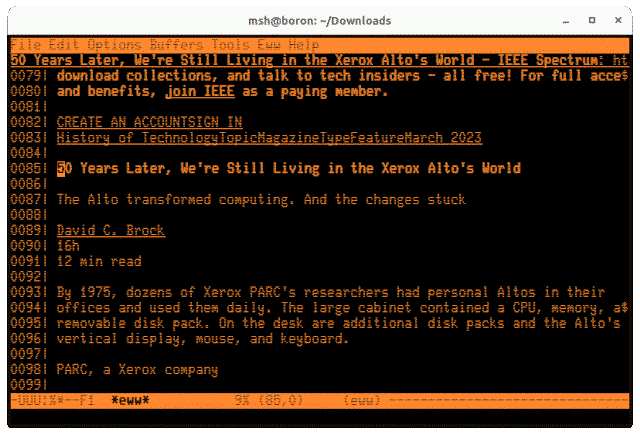

So I was reading this article by David Brock on the IEEE page about the Xerox Alto [1] and it dawned on me: I'm reading an article about the machine that introduced the concepts of graphical user interfaces in a terminal window.

I dunno. I just appreciate the irony.
I was going to include Gibson's quote about how evenly the future is distributed, but I'm going to point to Igor Schwarzmann's commentary on it instead. The future looks uneven if you assume external agency prevents you from upgrading to the latest and greatest.
Schwarzmann puts it better than I could when he observes:
"The more we rely on this quote as a mantra, the more we relinquish our own agency. It puts us all into the position of living in a future that belongs to someone else and never our own."
We wring our hands when we discover decades old computers play an integral part in our nuclear deterrent [3]. Most younger software engineers are amazed to discover the Computer Command System (CCS) controlling the Voyager probes is a custom 18-bit system with 4k words of memory (9k bytes) [4].
"How can you do anything in 9 kilobytes?" they ask.
I usually reply that when all you have is 9kb, you make do. But there's a deeper truth at work: the past has utility. Novelty is important, but novelty for novelty's sake is, as Schwarzmann implies above, dancing to someone else's tune.
If you look closely at the image above, you can see there's a title-bar on the terminal window. Of course I use a windowing system. It let's me manage the multiple terminal windows I have open on a typical day.
"What You See is What You Get" (WYSIWYG) is an important concept for environments where you are manipulating abstract objects whose nature is positional [5]. You can move a window or icon around a screen with a mouse. That makes sense. Do you need to move a page of text around when reading a book? Probably not. (Writing or composing a book is a completely different matter.)
The term "What You See Is All You Get (WYSIAYG)" describes the opportunity cost of using a graphical environment when something else would do better [6]. It didn't take me long do learn how to use the *nix command line and I feel it gives me much finer grained control over my digital assets.
I'm not a barbarian. I don't watch HBO on cable TV. I
have a device that plugs into my TV for that. And I
sometimes use a graphical file browser to move files
around instead of the venerable mv and
cp commands.
But just about every time I view content in a typical web browser, it's clear I'm not the customer. My eyeballs have been sold to some advertiser. I would not have a problem with this but for the auto-play video ads and the blinking images.
"But this is the price of free content," you say. No, I pay over $1000 a year for various subscriptions: Financial Times, HBR, Washington Post. I believe my payment gives me some consideration regarding the nature of ads I see on that platform. I never encountered an ad in print media that gave me a seizure. I would like to say the same about blinky video ads on the web.
The terminal gives me some manner of control. When I view the web from EWW (Emacs' Web Browser [7]) or Lynx (another popular text-based web browser [8]), I am seeing the textual content *I* want to see. With a few key-strokes I can render a web-page in Firefox if I need to see images on the page.
And living in the terminal gives me a degree of agility in terms of identity. When I ssh to work or personal systems, my identity lands only on those systems (and maybe a few routers in-between.) I leave way fewer crumbs for the advertisers to follow.
Text is nice. Text is pleasant. Text doesn't reach out and bite you. And I guarantee you I see a lot fewer ads than you do.